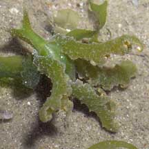
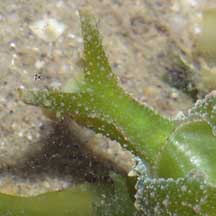
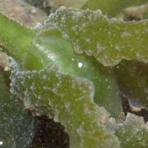
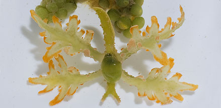

|
|
| sea slugs text index | photo index |
| Phylum Mollusca > Class Gastropoda > sea slugs > Order Sacoglossa |
| Tendril
slug Lobiger viridis Family Oxynoidae updated Jun 2020 Where seen? This well camouflaged slug is sometimes seen among green seaweeds on our Northern and Southern shores. Features: To about 3cm. It has a green shell and four long 'fingers' sticking out of the sides of its body that look like tendrils of a seaweed. These tendrils can be 'rolled up', making the slug very difficult to see among round seagrape seaweeds, for example. The tendrils can also be suddenly expanded and unfurled. This may be done to deter predators. The tendrils can also be dropped off (autotomized) whereupon the tendril continues to wriggle and thus distract the predator. Colour mostly green to match the seaweeds it is found on. Often with orange edges to its tendrils. What does it eat? Reports find this slug often among Oval sea grape seaweeds (Caulerpa racemosa). The tendrils may also help the slug obtain food from photosynthesis. Like other sacoglossans, this slug retains in its body, the chloroplasts obtained from its seaweed food. |
 Changi, Jun 05 |
 |
 |
 Tendrils can be suddenly unfurled to deter predators. Pulau Tekukor, Apr 13 |
| Tendril slugs on Singapore shores |
On wildsingapore
flickr
|
| Other sightings on Singapore shores |
Links
|